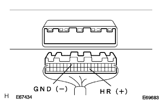
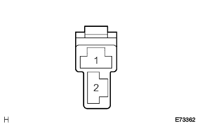
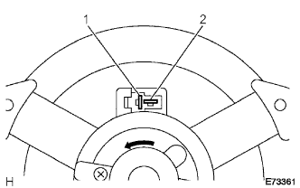
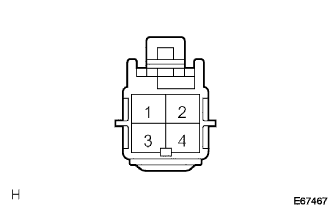
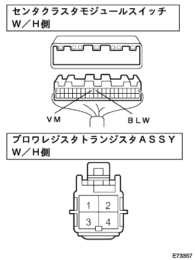

Harter & Air Condition Syona System Blow Motor Circuit |
| Step 1 | Actuator check |
In actuator check mode, check the operation of the blower motor (brois level).
| Step | Set temperature | Blower level | Piercing | Sucking mouth |
|---|---|---|---|---|
| 1 | MAX COLD -20.5 | 0 | Face | Outside air |
| 2 | 21.0-22.5 | 1 | B/L | Outside air |
| 3 | 23.0-25.0 | 1 | Foot1 | Outside air position (except cold region) 2 layers inside and outside (cold regions) |
| 4 | 25.5-27.5 | 16 | Foot2 | Position |
| 5 | 28.0-30.0 | 16 | F/d | Position |
| 6 | 30.5 -Max Hot | 31 | Def | Position |
|
| ||||
| NG | |
| Step 2 | Hughes single inspection (HTR) |
|
| ||||
| OK | |
| Step 3 | Hita Blow Motor Relay ASSY Single Inspection |
Remove the Hita Brois Motalille ASSY.
 |
Use SST (Toyota Electrical Tester) to check the conversation between connectors between terminals.
When the battery voltage is applied between the 1 terminal ← → 2 terminals of the connector using a SST (Toyota Electrical Tester), check the 3 terminals ← → 4 terminals and 3 terminals ← → 5 terminals.
|
| ||||
| OK | |
| Step 4 | Wire harness or connector inspection (Hita Brois Motalille ASSY-Senta Cluster Module Switch) |
Attach Hita Blow Motalillille ASSY.
Cut the connector of the center cruster module switch.
Turn on the IG switch.
|  |
Use SST (Toyota Electrical Tester) to measure the voltage between the vehicle wire harness side connector A28 (HR) ← → A13 (GND) terminals using SST (Toyota Electrical Tester).
|
| ||||
| OK | |
| Step 5 | Wire harness or connector inspection (Hita Brois Motalille ASSY-Blow Motor (with fan)) |
Connect the connector of the center cruster module switch.
Separate the broit motor connector.
Turn on the IG switch and make the blower switch to LO.
|  |
Use SST (Toyota Electrical Tester) to measure the voltage between the blower motor (with fan) vehicle wire harness side connector 1 terminal ← → body earth.
|
| ||||
| OK | |
| Step 6 | Blow motor (with fan) single inspection |
Take off the blower motor (with fan).
|  |
Confirm that when a battery plus is connected to a connector one terminal, and a minus battery is connected to a two terminal, the motor rotates in the direction of the arrow at the bottom of the motor without any noise.
The current value during rotation is measured using a SST (Toyota Electrical Tester) in a single motor (no load).
|
| ||||
| OK | |
| Step 7 | Wire harness or connector inspection (Browa Motor (with fan) -Brovaregistaista ASSY) |
Connect the connector of the blower motor.
Cut the broisista torningistor Assicy connector.
Turn on the IG switch and make the blower switch to LO.
|  |
Use SST (Toyota Electrical Tester) to measure the voltage between the Blow Vei Vei Vei Vei Vei Vehicle Resistor ASSY vehicle Wire harness side connector 4 terminals ← → body ground.
|
| ||||
| OK | |
| Step 8 | Wire harness or connector inspection (Blow Verie Resistor ASSY-Body Earth) |
Use SST (Toyota Electrical Tester) to inspect the conduction between the Wire Harness side connector 1 terminal ← → the body ground ground.
|
| ||||
| OK | |
| Step 9 | Blow Register Transistor ASSY Single Inspection |
Remove the Blow Verie Resistor ASSY.
Connect the battery minus to the four terminals of the connector and the battery plus, and one terminal through a 12V -3.4w valve.
 |
When the battery plus is connected to the two terminals, confirm that the valve lights up.
Use SST (Toyota Electrical Tester) to measure the resistance value between the connector 3 terminals ← → 4 terminals.
|
| ||||
| OK | |
| Step 10 | Wire harness or connector inspection (Senta Cluster Module Switch-Blow Verit Transistor ASSY) |
Cut the connector of the center cruster module switch.
|  |
Use SST (Toyota Electrical Tester) to inspect the conduction and GND short (short circuit) between each connector terminal of the vehicle wire harness.
| Senta Cluster Module Switch side Terminal number (terminal symbol) | Blow Verie Resistor ASSY side Terminal number |
|---|---|
| A11 (BLW) | 2 |
| A12 (VM) | 3 |
|
| ||||
| OK | ||
| ||